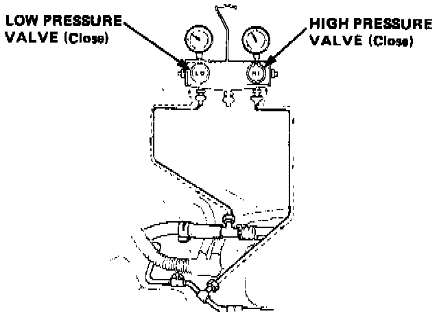
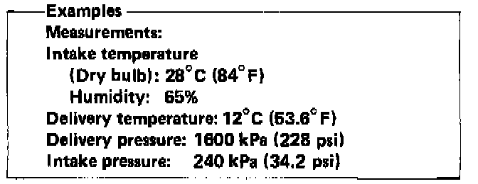

Performance Test
Performance TestNOTE: The graph (Inspection data) shows humidity between 30% and 90%, in increments of 10%.
Tolerance is ± 10% when taking a reading.

1. Connect gauges as shown.
2. Insert a dry bulb thermometer in the cold air outlet, and place the psychrometer (dry and wet bulb thermometer) close to the inlet of blower. Do not spill wet bulb water.
3. Test conditions:
- Avoid direct sunlight.
- Open engine hood.
- Open front doors and windows.
- Set the temperature control dial to MAX COLD and push the VENT and FRESH buttons.
- Turn the fan switch to MAX.
- Run the engine at 1,500 rpm.
- No driver and passengers in car.
4. After running the system for about 10 minutes under the above conditions, read the thermometer and pressure valve.
Performance Chart:

5. The performance of the system is satisfactory if the measurements are within the range bands shown on the Performance Chart.
Proper intake/delivery pressure and temperature ranges are shown on the chart.
Find your intake temperature across the bottom, and the relative intake and delivery pressures, and delivery temperature on the side. Draw a line through the chart at right angles to each of your measurement the vertical line should intersect each horizontal line within the range bands on the graph.
